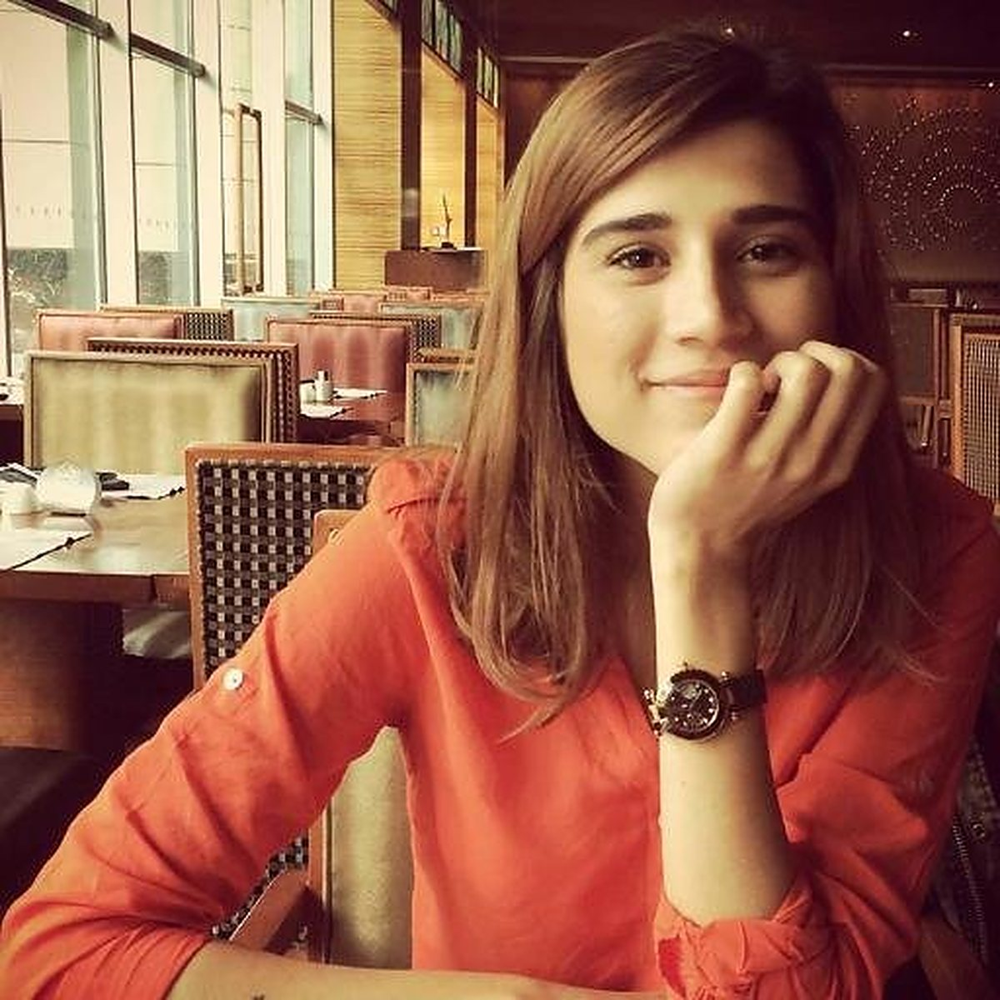
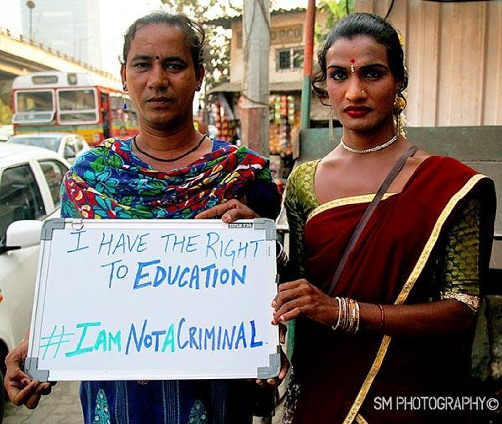
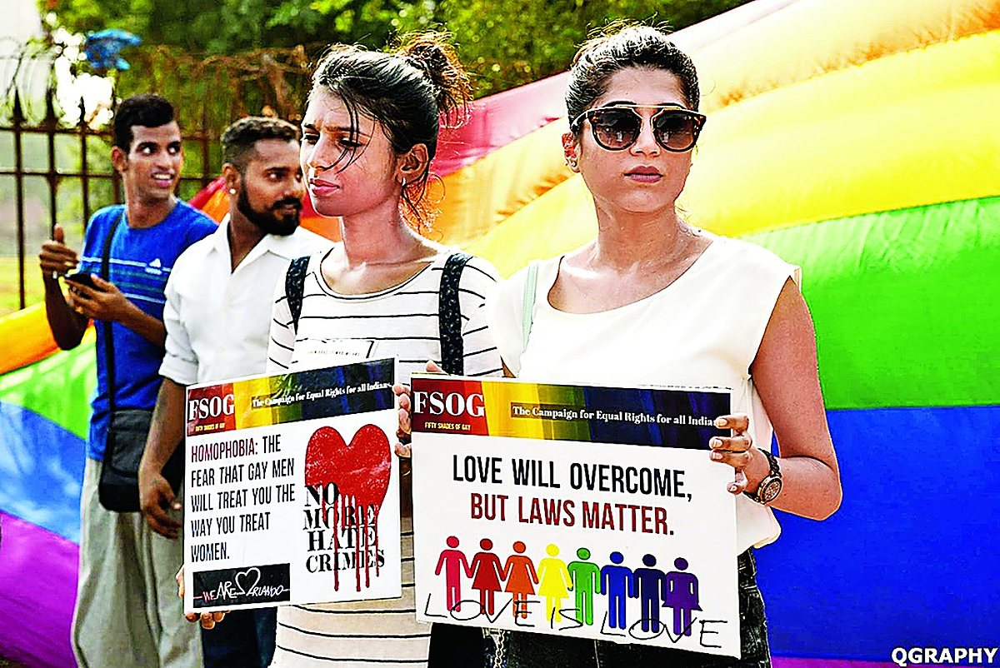
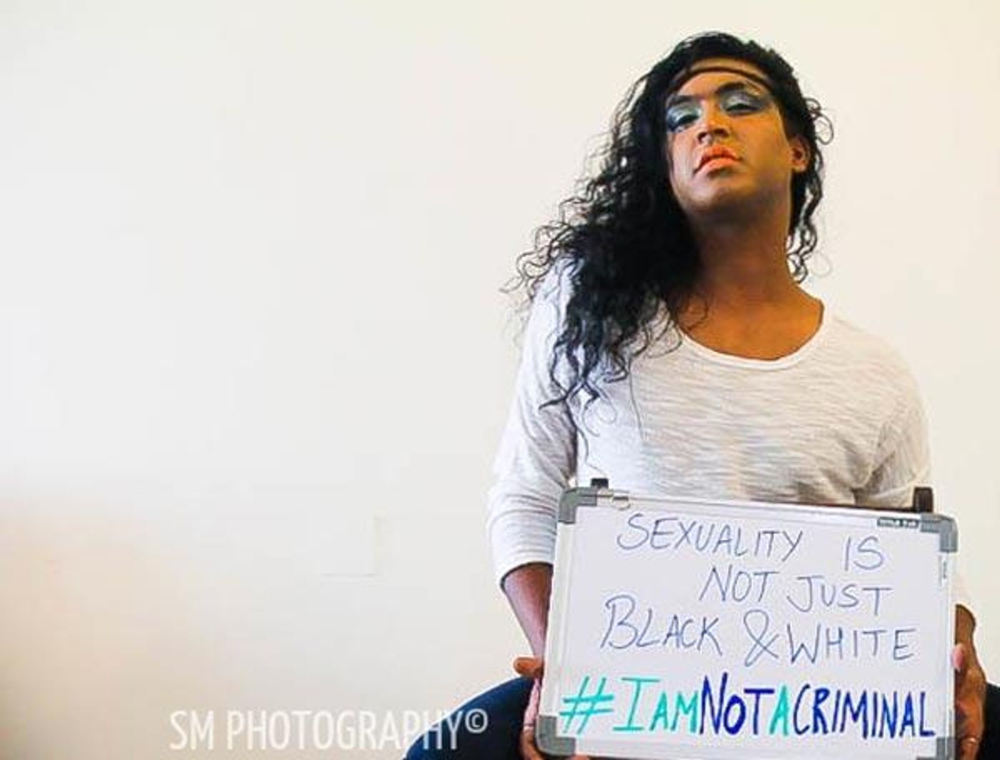
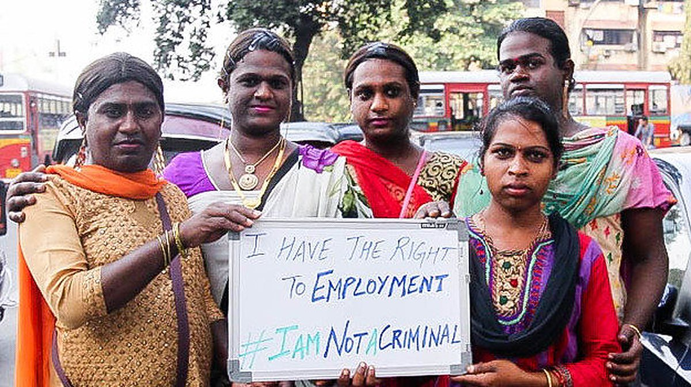
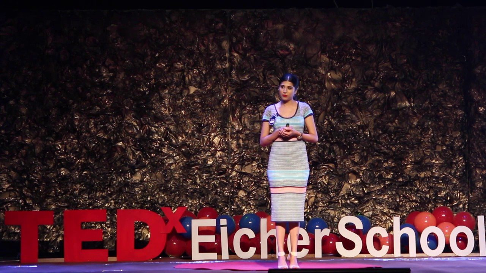
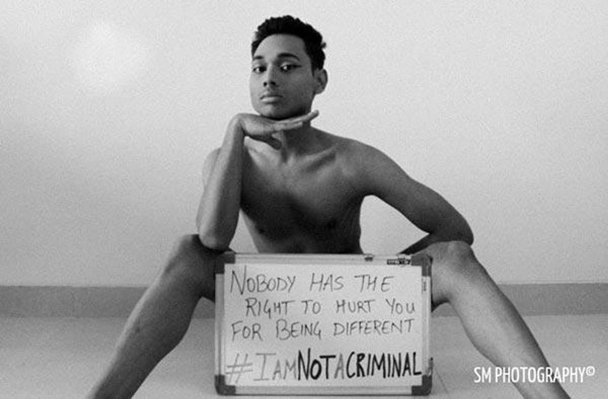
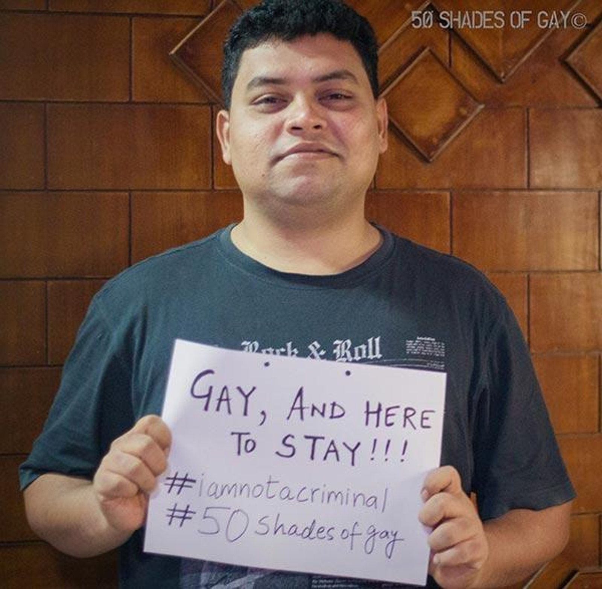
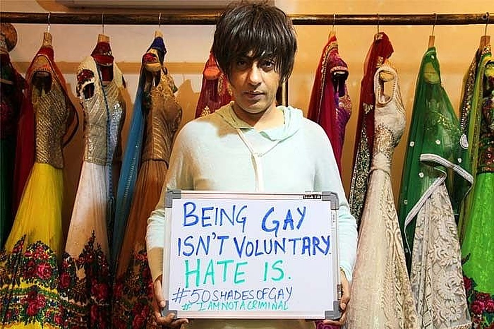

The journey
About FSOG · 2016 to today-
2 February 2016
Coming home to a contradiction
Shubham Mehrotra returned to India after years in international journalism, expecting to report on a modern, progressive country. On the drive from Mumbai airport, trans women at traffic junctions offered blessings to drivers who rolled up their windows. Women like Meetu, who wanted to join the police, and Pooja, who lived on small shop collections and festival dancing, were revered for luck yet denied an ordinary place in society.

Shubham Mehrotra, founder of Fifty Shades of Gay. 
Pooja (left) and Meetu (right) in Mumbai, demanding the right to education. Meetu dreamed of becoming a police officer; Pooja survived on daily street collections and dancing. -
2013 to 2016
Recognised by one ruling, criminalised by another
In 2014 the Supreme Court's NALSA judgment recognised transgender people as a third gender with rights to equality and work. Just months earlier, in December 2013, the same court had reinstated Section 377, making consensual same-sex love an offence again. The state granted dignity with one hand and criminalised intimacy with the other.

Founder Shubham Mehrotra (right) alongside community allies at an early Fifty Shades of Gay equality gathering in Mumbai. QGraphy. -
2016
"We were living it. The papers were not writing it."
Mainstream newsrooms rarely reported on queer lives. There was no census, no workplace protection, and violence against gender-nonconforming people in cities like Bengaluru went largely unpunished. Queer people were not absent. Their existence had simply been made taboo.

Fashion designer Jason during the 2016 campaign. Having found safety in his mother's acceptance at fifteen, he lent his face to FSOG to challenge the media's refusal to cover queer Indians living with dignity. SM Photography. -
February 2016
#IAmNotACriminal
FSOG launched on the street with a whiteboard, a marker pen and one question for queer and trans people across cities: in a fairer world, what right would you want? Trans women at Mumbai's traffic junctions answered, and so did television star and drag artist Sushant Divgikar (Rani Ko-HE-Nur), trans pioneer Dr Sylvester Rodgers and designer Rohit Verma. Families joined too. At Mumbai Pride, Pradeep Divgikar marched beside his child holding a sign of unconditional love.

Trans women at a Mumbai traffic junction during #IAmNotACriminal, 2016. -
Mid 2016
Fighting homophobia on the feed
Within three months, the street project had become an eight-city documentary effort across Mumbai, Delhi, Pune, Odisha, Chandigarh, Bengaluru, Chennai and Mysuru. Through earned trust, FSOG recorded more than 80 personal stories, from well-known cultural figures to trans women and hijra communities in Mumbai's red-light districts. A national newspaper covered the campaign, and the feed became a safe place for people who were still closeted.
Newspaper clipping: "Fighting homophobia on Instagram", 2016Photo to come A 2016 national newspaper feature documenting how 23-year-old Shubham Mehrotra and volunteer contributors gathered over 60 personal narratives. -
2017
Beyond the lens
As hundreds of people reached out for help, FSOG grew from a photo series into a support network. It brought together mental health professionals and international legal advisers to guide people in distress, set up family counselling to help parents through acceptance, and pushed for comprehensive sex education. The crew marched at Bengaluru Pride that year.
Photos: the FSOG crew at Bengaluru Pride, 2017Photo to come Shubham Mehrotra and the FSOG crew at Bengaluru Pride in 2017, with placards reading "Not gay, but supportive" and "Straight man with gay pride". -
2017 to 2018
The stories kept growing
FSOG went from documenting lives to mobilising for them: organising vigils, coordinating crisis support, connecting people with lawyers and amplifying petitions against Section 377. Believing that shame starts with ignorance, Mehrotra took the case for sex education to the TEDxEicherSchool stage.

Shubham Mehrotra presenting her talk on breaking the culture of silence around sex education and youth safety at TEDxEicherSchool (available to stream on YouTube). -
6 September 2018
From street portraits to recovering history
The Supreme Court unanimously decriminalised consensual same-sex relationships, but a ruling could not undo generations of erasure overnight. With voices like Anwesh Sahoo, who represented India at Mr Gay World, and comedian Navin Noronha, FSOG widened its lens across South Asia, researching and recovering centuries of queer history to show that queer lives here were never a Western import.

Anwesh Sahoo, artist, model and Mr Gay World India 2016, who partnered with FSOG to challenge hyper-masculine stereotypes through fashion and visual art. 
Stand-up comedian Navin Noronha, one of India's first out comics: "The fact that no one chooses to be gay is still not clear." -
28 September 2026
100,000 strong, and The Living Archive
More than 4,000 posts and countless recovered histories later, 100,000 people read, share and keep this collective memory alive. To thank them, FSOG launched The Living Archive: a free fortnightly publication with long-form investigations, full source lists, archival documents and reading recommendations.

Fashion designer Rohit Verma, Mumbai.
In their own words
From the 2016 whiteboardsI have the right to employment #IAmNotACriminal
I have the right to education #IAmNotACriminal
Sexuality is not just black & white #IAmNotACriminal
Nobody has the right to hurt you for being different #IAmNotACriminal
Gay, and here to stay!!! #IAmNotACriminal
Being gay isn't voluntary. Hate is. #50ShadesOfGay
What FSOG does today
Stories
Researched, sourced stories that recover queer history across South Asia and beyond.
The Living Archive
A free fortnightly publication for readers who want to go deeper.
Learn
Explainers on identity, sexual health and mental health, and where to find support.
Community
A network of 100,000 people, partners and volunteers who keep these stories alive.